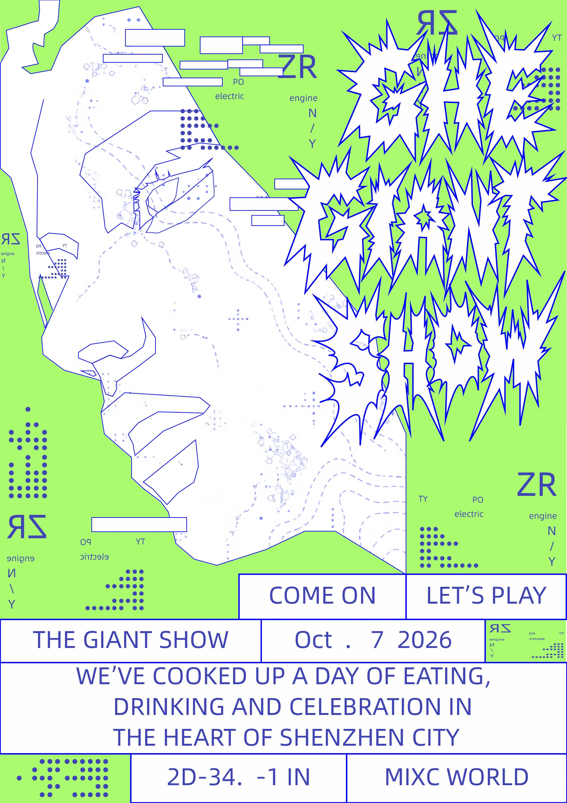
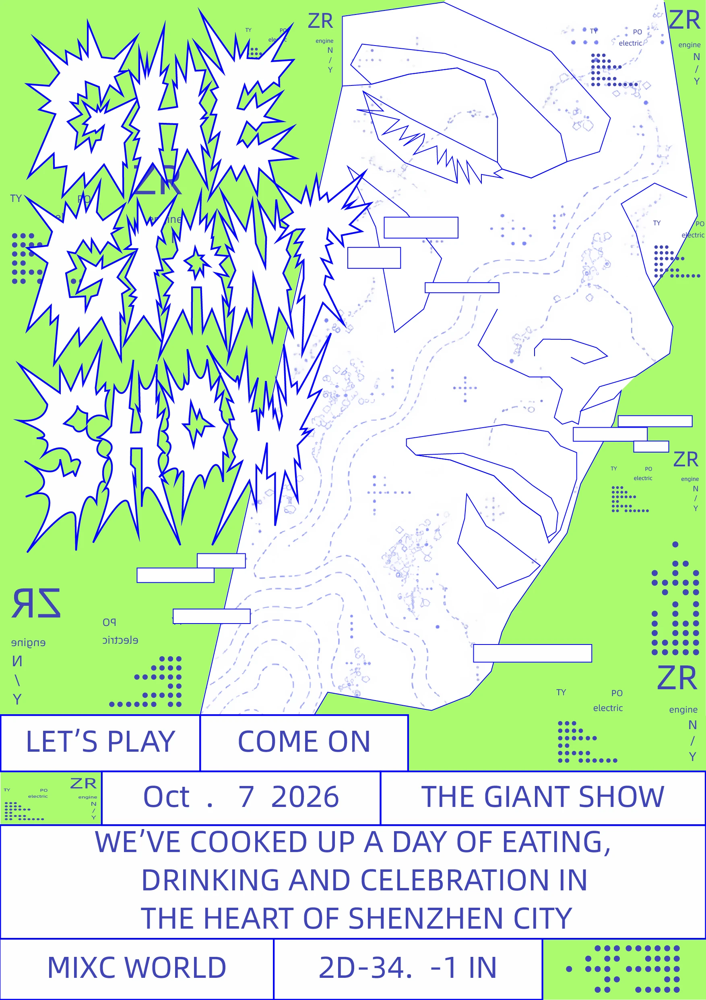
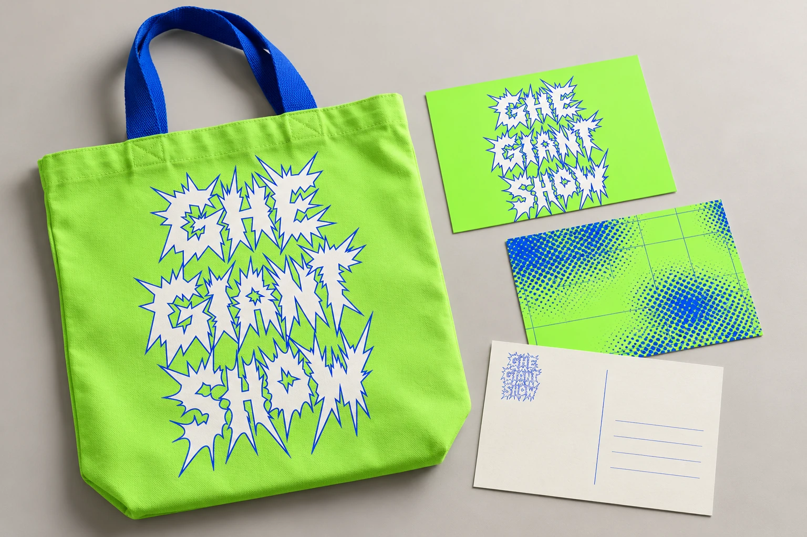
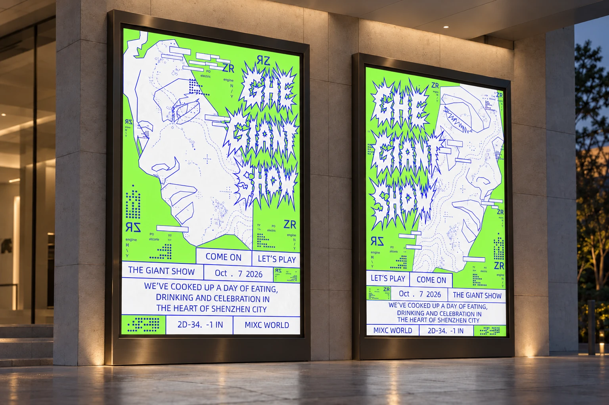
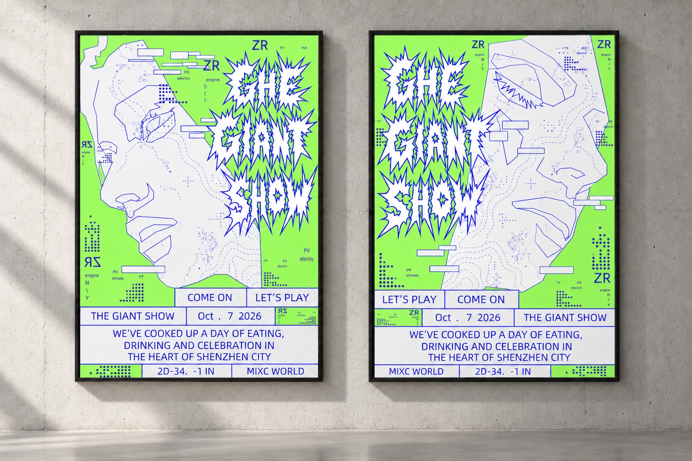

GRAPHIC DESIGN / 08
巨人展
THE GIANT SHOW · VISUAL SYSTEM
主题 / THEME
系列海报、实验字标与周边设计
风格 / STYLE
酸性设计、实验字体与技术图形语言
说明 / DESCRIPTION
两张方向相反的巨人侧脸以统一比例并排展示。荧光绿背景、蓝色线描与尖刺字标共同构成展览视觉识别。


系列海报、实验字标与周边设计
酸性设计、实验字体与技术图形语言
两张方向相反的巨人侧脸以统一比例并排展示。荧光绿背景、蓝色线描与尖刺字标共同构成展览视觉识别。
这套作品具有酸性设计的视觉特征：高亮荧光绿与蓝色形成强烈反差，尖锐、不规则的字形营造紧张、躁动的节奏。巨人脸部用几何线段概括，结合虚线路径、等高线与点阵，让人物像一张可探索的地图。
标题是画面中的视觉图形，底部信息则采用规则矩形分区与清晰的无衬线排字。自由、激烈的主体与理性的网格形成对比，使实验感与信息可读性并存。
以下为这套视觉的建议应用规范。标题使用现有定制字标，不将其识别为某款现成字体。原海报信息字体名称尚未确认，替代字体需以实际排版对照为准。
| 用途 | 字体与形式 | 使用规则 |
|---|---|---|
| 主标题 / Logo | 原始 THE GIANT SHOW 尖刺字标 | 保留三行结构、白色填充和蓝色描边。等比缩放，不重排、拉伸或遮挡尖刺。 |
| 英文活动信息 | 建议 Arial Regular 或 Helvetica Regular | 使用大写英文、蓝色文字。左右内边距保持一致，不压缩字形以强行塞满信息框。 |
| 日期与数字 | 沿用信息字体 | 以字号和空间区分层级，避免不规则字距影响阅读。 |
| 中文说明 | 建议思源黑体 / Noto Sans SC | 正文采用常规字重，与英文无衬线风格协调。 |
建议层级：主要活动信息为正文的 1.5 至 2 倍，辅助标注为正文的 0.7 至 0.85 倍。字标周围至少留出其宽度 5% 的净空。小尺寸应用若尖刺、描边或字腔无法辨认，应放大字标或使用普通文字名称。印刷字号与细线粗细须通过实际打样确认。
帆布袋以大面积荧光绿和蓝色提带突出远距离识别。明信片分别使用完整字标、点阵图形和简洁地址版式，延续海报的同一套语言。


